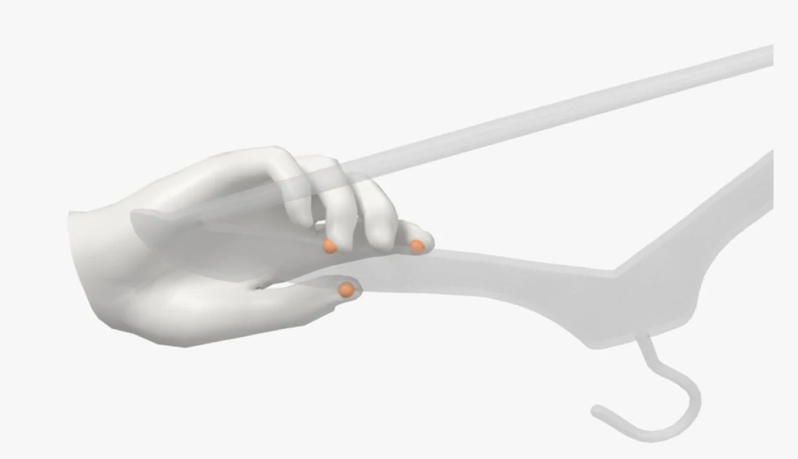
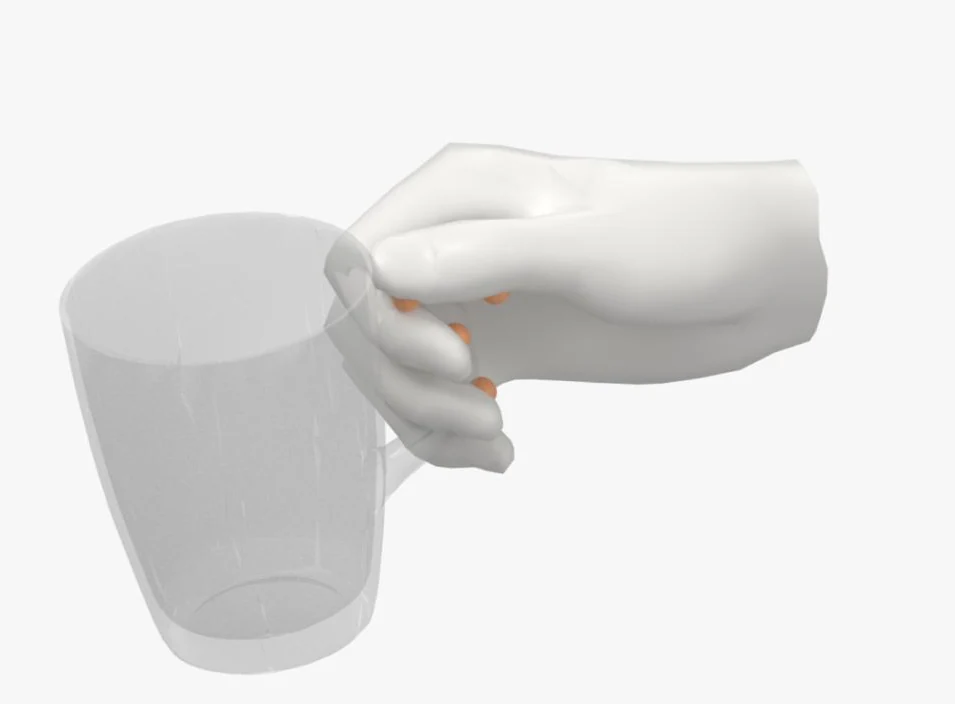
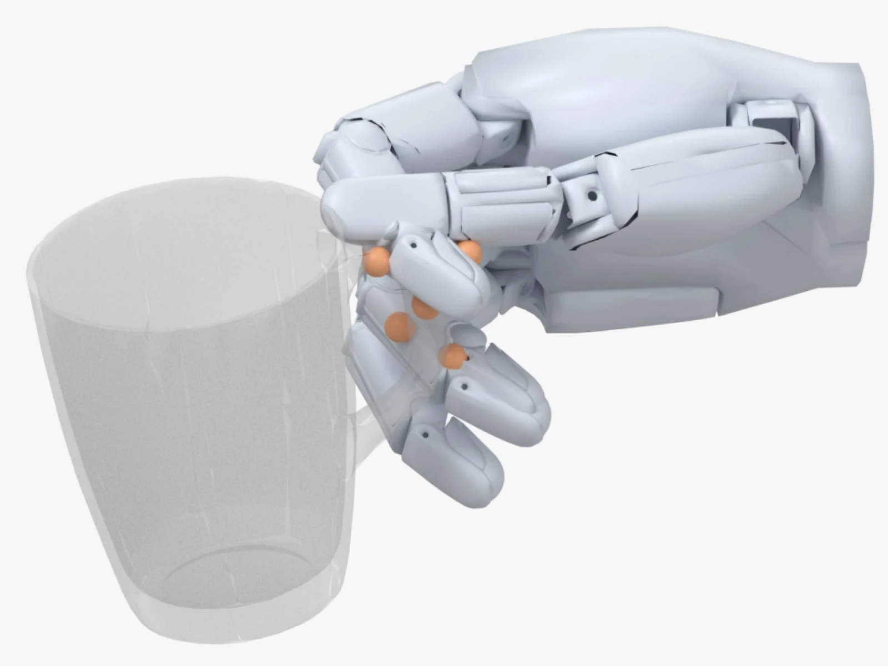
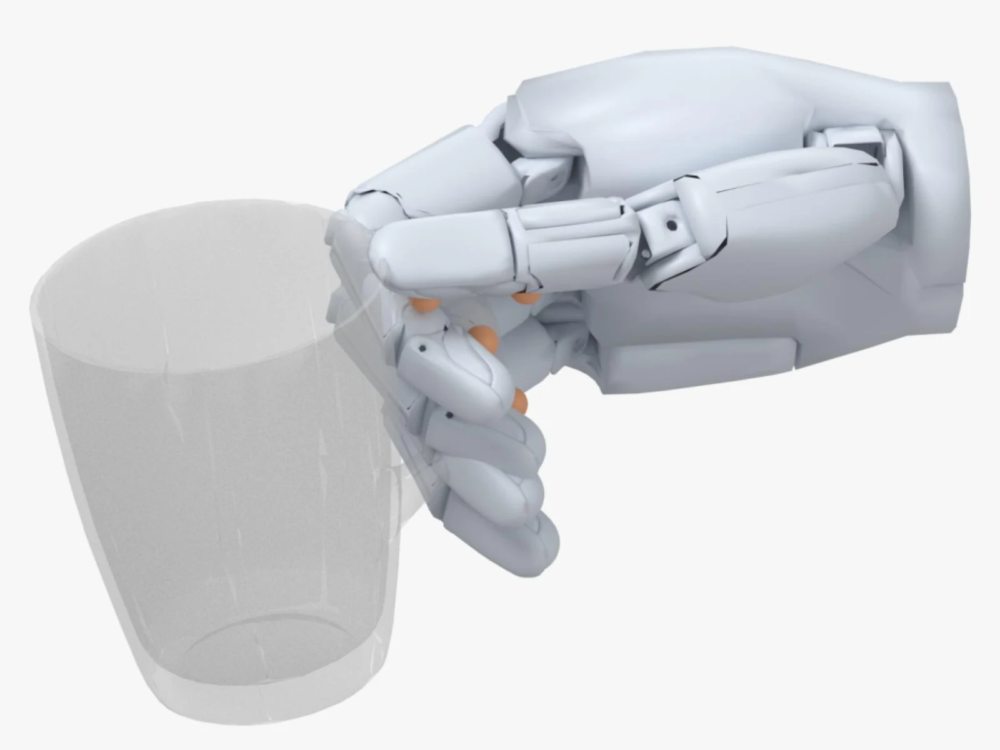
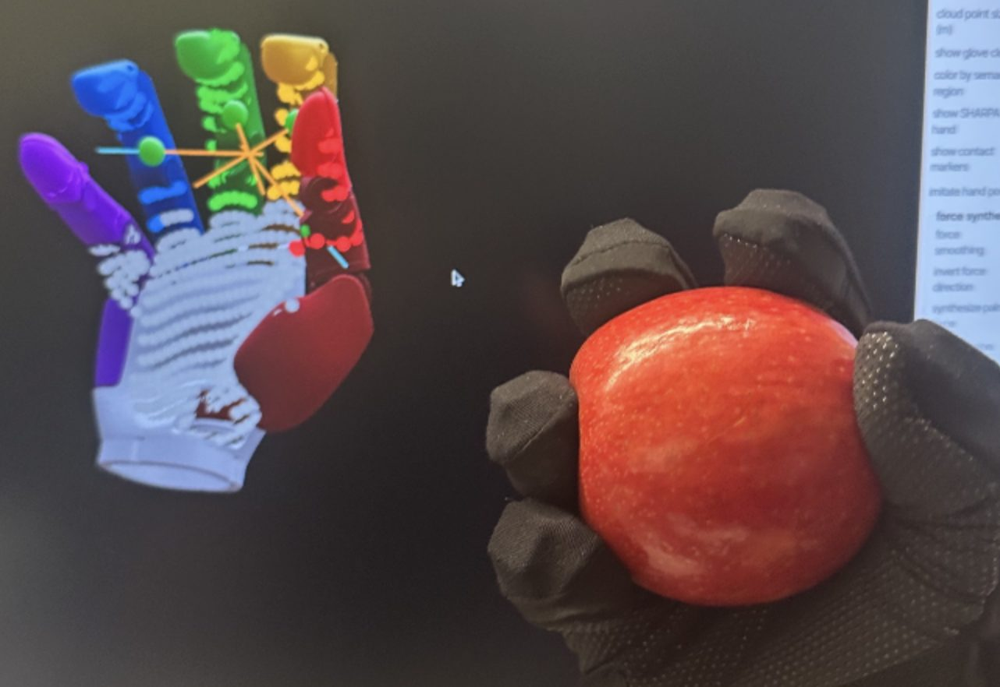
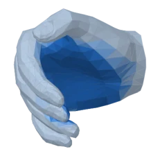
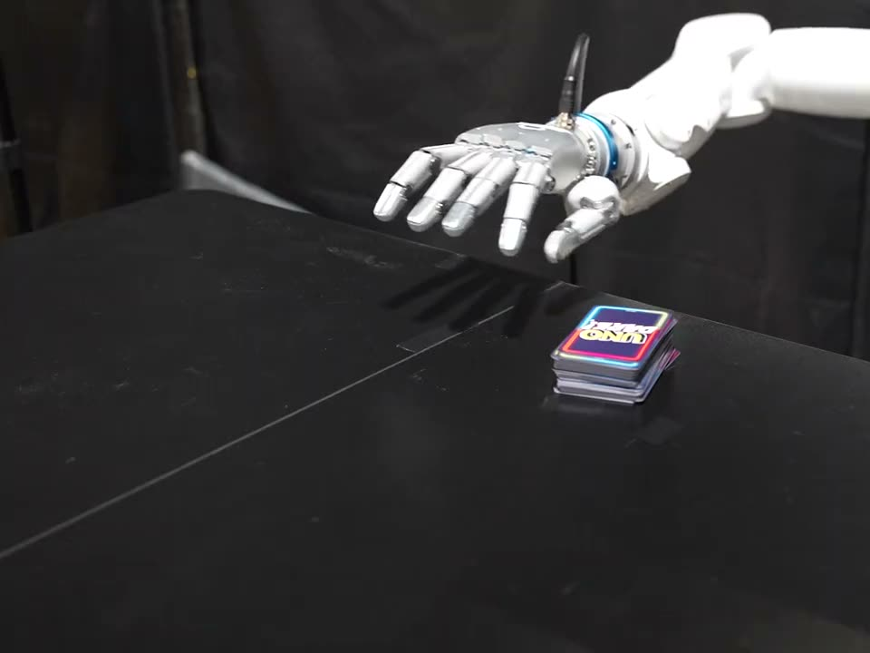
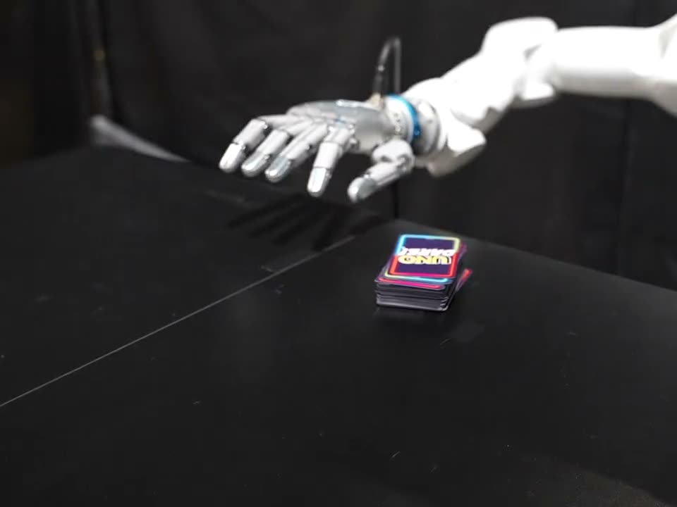

Video, glove or motion capture
Any recording with hand pose and contact works.
- video
- HaWoR pose, Vid-HACO contact
- glove
- 744 taxels, wrist tracker
- mocap
- OptiTrack plus the glove
- our clips
- 47 video, 18 glove, 2 mocap
CARD turns human hand demonstrations (video, tactile glove, motion capture) into robot joint and force targets that put each pad where the human pressed. No simulator, and no object model for video or glove.
Copying fingertips or joint angles to a robot hand misses the contact by a median 20 to 25 mm. CARD keeps where, which way and how hard each hand region pressed (a contact anchor) and puts the matching pad there.

Human
HumanRetargeted to the SHARPA Wave. Orange spheres are the human contact anchors.
Stages 1 and 2 turn a demonstration into contact anchors, 3 and 4 solve the robot pose per frame, 5 replays it on hardware.
Any recording with hand pose and contact works.
Every source becomes a MANO hand mesh sequence with fixed regions (three per finger, plus the palm) and at most one anchor C_f=(c_f,\hat d_f,F_f) per region and frame. Anchors live on the hand, not the object.
Joint angles are copied, the thumb goes through a fixed affine map and the wrist aligns the fingertips. This alone reaches 25.2% contact, ten times the kinematic baselines.


A GPU sampler solves wrist pose and joint angles per frame, pulling each pad onto its anchor and turning it toward the push. Contact rises from 25.2% to 43.6%, in-cone from 5.7% to 18.3%.
On the SHARPA Wave, an integral admittance loop turns each fingertip's force error into extra curl past the joint target, plus a feedforward torque.
Steps of 9.7, 7 and 2.6 N (thumb, middle, index) settle, and return to zero on release, within about a second.
Visualization only: the person is painted out and the retargeted SHARPA Wave composited in.
All three end as the same anchored MANO sequence, so one set of solver weights serves them all.
HaWoR tracks the hand and Vid-HACO marks which of the 778 MANO vertices touch. Forces come from a whole-clip wrench balance.

744 taxels measure contact and pressure directly; a wrist tracker gives the motion. Here CARD keeps 89% of anchor-frames.

OptiTrack adds drift-free wrist motion and a tracked object mesh. Datasets such as GRAB enter through their own annotations.
Vid-HACO reads 8-frame clips (V-JEPA 2.1 encoder, 1.55M training frames). On held-out HRDexDB it lifts vertex F1 from 63.3 to 67.2 and average precision from 54.3 to 72.2 over the image-based HACO.
Clips from an earlier Vid-HACO version.
Retrained on our data, HACO-R gains in distribution (F1 57.1 to 74.5) but not on HRDexDB, so the gain is the model. Both HACO models flag contact on every frame (trivial frame F1 75.9); Vid-HACO reaches 95.3.
167 demonstrations on the SHARPA Wave (our 67 clips, 100 GRAB clips). A contact counts within 2 mm of the assigned link's palmar face.
| CARD | DexPilot | AnyTeleop-K | AnyTeleop-P | ReGrind | CARD (init only) | |
|---|---|---|---|---|---|---|
| Our 67 clips (video, glove, motion capture) | ||||||
| Contact rate (%) | 43.6 | 2.5 | 2.5 | 2.4 | – | 25.2 |
| Correct finger (%) | 41.3 | 2.5 | 2.5 | 2.4 | – | 23.9 |
| In cone (%) | 18.3 | 1.0 | 1.1 | 1.3 | – | 5.7 |
| Gap, median (mm) | 3.31 | 24.23 | 24.55 | 25.06 | – | 11.52 |
| GRAB (100 clips) | ||||||
| Contact rate (%) | 43.1 | 4.9 | 4.9 | 4.6 | 22.5 | 19.6 |
| Correct finger (%) | 40.6 | 4.8 | 4.9 | 4.5 | 20.7 | 17.8 |
| In cone (%) | 16.2 | 1.7 | 1.7 | 1.7 | 5.2 | 3.8 |
| Gap, median (mm) | 3.56 | 20.90 | 20.45 | 20.66 | 7.86 | 13.78 |
| Penetration, median (mm) | 7.96 | 12.71 | 12.79 | 13.02 | 9.80 | 11.15 |
ReGrind needs the object mesh, so it runs on GRAB only.
Without the cone term the solver reaches more anchors (69.1% against 61.9%) but only 54.6% in cone. With it, every variant stays near 80%; the full method reaches 82.2%.
A small pull toward the human's touch point (\alpha_f=0.15) adds contact. Dropping the initializer costs about ten points.
20 video clips with HACO anchors (4,297 anchor-frames); not comparable with the table above.
A 7-DoF arm follows the wrist and the hand replays joint and force targets open-loop: no object pose, no policy.
Without the stage 5 force loop, no card lifts, no mustard comes out, the ink stays, and the hammer and cup slip. Red marks on the timeline show where the run without the tracker fails.


Each hand region maps to a robot link and its grasping face; costs and weights stay fixed. Even a parallel-jaw gripper keeps grasp structure and contact timing.
Quality is bounded by the demonstration, retargeting is offline, the full solver runs on one high-DoF hand, and open-loop replay cannot recover if the object ends up far from the human's.
@inproceedings{card2026,
title = {{CARD}: Contact-Anchored Retargeting for Dexterous Manipulation},
author = {Anonymous Authors},
booktitle = {Conference on Robot Learning (CoRL)},
year = {2026}
}